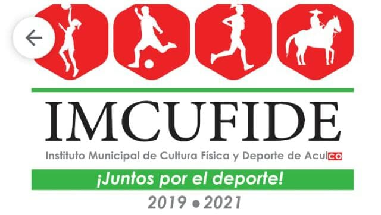

¿Que es Imcufide Aculco?
El Instituto Municipal de Cultura Física y Deporte de Aculco (IMCUFIDE) es un Organismo Público Descentralizado , dedicado a impulsar la práctica deportiva en todos los habitantes del municipio, propiciar la interacción familiar y social así como fomentar la salud física, mental, cultural y social de la población; propiciar el uso adecuado de los tiempos libres y promover e impulsar el deporte para los adultos mayores y las personas con capacidades diferentes logrando elevar el nivel competitivo del deporte a través del uso de instalaciones y equipo del Organismo.
Liga Mx Tercera
Es un equipo, un grupo de personas de la categoria (1999,2000,2001,2001) que se unen en función de la consecución de un objetivo en común. Un ejemplo gráfico y concreto de un equipo son los, valga la redundancia, equipos de fútbol, quienes tienen como finalidad de su unión el logro de alguno de los campeonatos que disputan en esye caso la liga nacional mx de tercera. Los futbolistas de una misma organización deportiva trabajarán en equipo y formarán un equipo de trabajo para alcanzar su meta.
Pero trabajar en equipo y un equipo de trabajo no es lo mismo, aunque en el caso que utilizamos de ejemplo son dos cuestiones que necesariamente irán de la mano. Porque el equipo de trabajo es el conjunto de personas asignadas, de acuerdo a sus habilidades y competencias específicas, para cumplir con determinada meta bajo las órdenes de un coordinador. Aquí los futbolistas son las personas que despliegan la tarea gracias a su habilidad con la pelota y el director técnico es el que hace a las veces de coordinador de este grupo.

|
Liga Mx Cuarta
Es un equipo, un grupo de personas de la categoria (2001,2002,2003,2004) que se unen en función de la consecución de un objetivo en común.
Si un equipo está dispuesto a pagar el precio en forma de sacrificio, compromiso y generosidad son muchas las probabilidades de conseguir un objetivo.
Cuando ya tenemos los objetivos marcados debemos crear el ambiente necesario para poder conseguir el máximo rendimiento tanto del equipo como de los jugadores individualmente y hay muchos factores, que independientemente cada uno no son determinantes, pero que en su conjunto crean un ambiente ideal para el rendimiento máximo. El entorno de trabajo, el vestuario, las relaciones personales, los conflictos, los momentos difíciles, los momentos de euforia, etc. El clima del vestuario debe ser adecuado porque es un lugar casi sagrado para los jugadores.
|
|
Titulo del Articulo
Texto del Articulo
|

|
Para informacion da clic aqui: